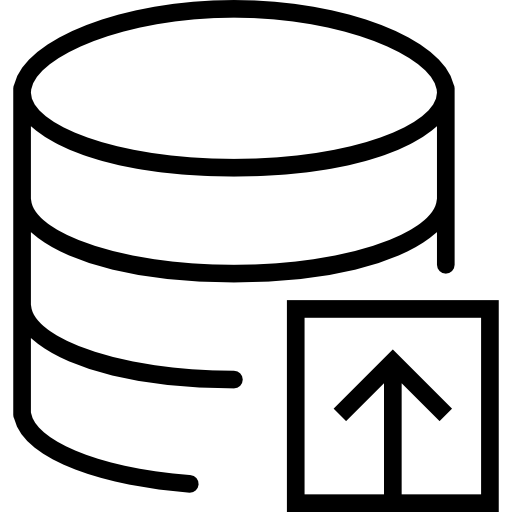

<!-- Contoh template untuk menambahkan skill card baru -->

<!-- Template HTML untuk skill card baru -->
<div class="skill-card" data-aos="zoom-in" data-aos-delay="800">
    <div class="skill-icon">
        
        <i data-lucide="icon-name" style="display: none;"></i>
    </div>
    <h3 class="skill-title">Nama Skill</h3>
    <p class="skill-desc">Deskripsi singkat skill</p>
</div>

<!-- Langkah-langkah menambahkan skill card baru: -->
<!--
1. Copy template di atas
2. Ganti "nama-icon.png" dengan nama file icon yang sesuai
3. Ganti "icon-name" dengan nama icon Lucide sebagai fallback
4. Ganti "Nama Skill" dengan nama skill yang sebenarnya
5. Ganti "Deskripsi singkat skill" dengan deskripsi yang sesuai
6. Sesuaikan data-aos-delay (tambahkan 100 dari skill sebelumnya)
7. Paste ke dalam grid skills section
-->

<!-- Contoh skill card yang sudah jadi -->
<div class="skill-card" data-aos="zoom-in" data-aos-delay="800">
    <div class="skill-icon">
        
        <i data-lucide="globe" style="display: none;"></i>
    </div>
    <h3 class="skill-title">Web Development</h3>
    <p class="skill-desc">HTML, CSS, JavaScript</p>
</div>

<div class="skill-card" data-aos="zoom-in" data-aos-delay="900">
    <div class="skill-icon">
        
        <i data-lucide="database" style="display: none;"></i>
    </div>
    <h3 class="skill-title">Database</h3>
    <p class="skill-desc">MySQL, PostgreSQL, MongoDB</p>
</div>
